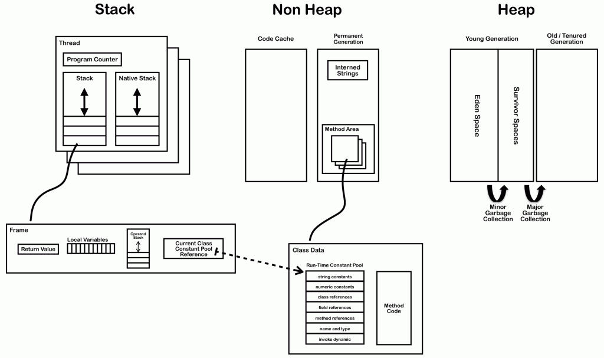

JVM内幕：Java虚拟机详解
2016-02-06 分类：JAVA开发、推荐阅读、编程开发、首页精华暂无人评论 来源：ImportNew
这篇文章解释了Java 虚拟机（JVM）的内部架构。下图显示了遵守 Java SE 7 规范的典型的 JVM 核心内部组件。

上图显示的组件分两个章节解释。第一章讨论针对每个线程创建的组件，第二章节讨论了线程无关组件。
- 线程
- JVM 系统线程
- 每个线程相关的
- 程序计数器
- 栈
- 本地栈
- 栈限制
- 栈帧
- 局部变量数组
- 操作数栈
- 动态链接
- 线程共享
- 堆
- 内存管理
- 非堆内存
- 即时编译
- 方法区
- 类文件结构
- 类加载器
- 更快的类加载
- 方法区在哪里
- 类加载器参考
- 运行时常量池
- 异常表
- 符号表
- Interned 字符串
线程
这里所说的线程指程序执行过程中的一个线程实体。JVM 允许一个应用并发执行多个线程。Hotspot JVM 中的 Java 线程与原生操作系统线程有直接的映射关系。当线程本地存储、缓冲区分配、同步对象、栈、程序计数器等准备好以后，就会创建一个操作系统原生线程。Java 线程结束，原生线程随之被回收。操作系统负责调度所有线程，并把它们分配到任何可用的 CPU 上。当原生线程初始化完毕，就会调用 Java 线程的 run() 方法。run() 返回时，被处理未捕获异常，原生线程将确认由于它的结束是否要终止 JVM 进程（比如这个线程是最后一个非守护线程）。当线程结束时，会释放原生线程和 Java 线程的所有资源。
JVM 系统线程
如果使用 jconsole 或者其它调试器，你会看到很多线程在后台运行。这些后台线程与触发 public static void main(String[]) 函数的主线程以及主线程创建的其他线程一起运行。Hotspot JVM 后台运行的系统线程主要有下面几个：
| 虚拟机线程（VM thread） | 这个线程等待 JVM 到达安全点操作出现。这些操作必须要在独立的线程里执行，因为当堆修改无法进行时，线程都需要 JVM 位于安全点。这些操作的类型有：stop-the-world 垃圾回收、线程栈 dump、线程暂停、线程偏向锁（biased locking）解除。 |
| 周期性任务线程 | 这线程负责定时器事件（也就是中断），用来调度周期性操作的执行。 |
| GC 线程 | 这些线程支持 JVM 中不同的垃圾回收活动。 |
| 编译器线程 | 这些线程在运行时将字节码动态编译成本地平台相关的机器码。 |
| 信号分发线程 | 这个线程接收发送到 JVM 的信号并调用适当的 JVM 方法处理。 |
线程相关组件
每个运行的线程都包含下面这些组件：
程序计数器（PC）
PC 指当前指令（或操作码）的地址，本地指令除外。如果当前方法是 native 方法，那么PC 的值为 undefined。所有的 CPU 都有一个 PC，典型状态下，每执行一条指令 PC 都会自增，因此 PC 存储了指向下一条要被执行的指令地址。JVM 用 PC 来跟踪指令执行的位置，PC 将实际上是指向方法区（Method Area）的一个内存地址。
栈（Stack）
每个线程拥有自己的栈，栈包含每个方法执行的栈帧。栈是一个后进先出（LIFO）的数据结构，因此当前执行的方法在栈的顶部。每次方法调用时，一个新的栈帧创建并压栈到栈顶。当方法正常返回或抛出未捕获的异常时，栈帧就会出栈。除了栈帧的压栈和出栈，栈不能被直接操作。所以可以在堆上分配栈帧，并且不需要连续内存。
Native栈
并非所有的 JVM 实现都支持本地（native）方法，那些提供支持的 JVM 一般都会为每个线程创建本地方法栈。如果 JVM 用 C-linkage 模型实现 JNI（Java Native Invocation），那么本地栈就是一个 C 的栈。在这种情况下，本地方法栈的参数顺序、返回值和典型的 C 程序相同。本地方法一般来说可以（依赖 JVM 的实现）反过来调用 JVM 中的 Java 方法。这种 native 方法调用 Java 会发生在栈（一般是 Java 栈）上；线程将离开本地方法栈，并在 Java 栈上开辟一个新的栈帧。
栈的限制
栈可以是动态分配也可以固定大小。如果线程请求一个超过允许范围的空间，就会抛出一个StackOverflowError。如果线程需要一个新的栈帧，但是没有足够的内存可以分配，就会抛出一个 OutOfMemoryError。
栈帧（Frame）
每次方法调用都会新建一个新的栈帧并把它压栈到栈顶。当方法正常返回或者调用过程中抛出未捕获的异常时，栈帧将出栈。更多关于异常处理的细节，可以参考下面的异常信息表章节。
每个栈帧包含：
- 局部变量数组
- 返回值
- 操作数栈
- 类当前方法的运行时常量池引用
局部变量数组
局部变量数组包含了方法执行过程中的所有变量，包括 this 引用、所有方法参数、其他局部变量。对于类方法（也就是静态方法），方法参数从下标 0 开始，对于对象方法，位置0保留为 this。
有下面这些局部变量：
- boolean
- byte
- char
- long
- short
- int
- float
- double
- reference
- returnAddress
除了 long 和 double 类型以外，所有的变量类型都占用局部变量数组的一个位置。long 和 double 需要占用局部变量数组两个连续的位置，因为它们是 64 位双精度，其它类型都是 32 位单精度。
操作数栈
操作数栈在执行字节码指令过程中被用到，这种方式类似于原生 CPU 寄存器。大部分 JVM 字节码把时间花费在操作数栈的操作上：入栈、出栈、复制、交换、产生消费变量的操作。因此，局部变量数组和操作数栈之间的交换变量指令操作通过字节码频繁执行。比如，一个简单的变量初始化语句将产生两条跟操作数栈交互的字节码。
int i;
被编译成下面的字节码：
0: iconst_0 // Push 0 to top of the operand stack 1: istore_1 // Pop value from top of operand stack and store as local variable 1
更多关于局部变量数组、操作数栈和运行时常量池之间交互的详细信息，可以在类文件结构部分找到。
动态链接
每个栈帧都有一个运行时常量池的引用。这个引用指向栈帧当前运行方法所在类的常量池。通过这个引用支持动态链接（dynamic linking）。
C/C++ 代码一般被编译成对象文件，然后多个对象文件被链接到一起产生可执行文件或者 dll。在链接阶段，每个对象文件的符号引用被替换成了最终执行文件的相对偏移内存地址。在 Java中，链接阶段是运行时动态完成的。
当 Java 类文件编译时，所有变量和方法的引用都被当做符号引用存储在这个类的常量池中。符号引用是一个逻辑引用，实际上并不指向物理内存地址。JVM 可以选择符号引用解析的时机，一种是当类文件加载并校验通过后，这种解析方式被称为饥饿方式。另外一种是符号引用在第一次使用的时候被解析，这种解析方式称为惰性方式。无论如何 ，JVM 必须要在第一次使用符号引用时完成解析并抛出可能发生的解析错误。绑定是将对象域、方法、类的符号引用替换为直接引用的过程。绑定只会发生一次。一旦绑定，符号引用会被完全替换。如果一个类的符号引用还没有被解析，那么就会载入这个类。每个直接引用都被存储为相对于存储结构（与运行时变量或方法的位置相关联的）偏移量。
线程间共享
堆
堆被用来在运行时分配类实例、数组。不能在栈上存储数组和对象。因为栈帧被设计为创建以后无法调整大小。栈帧只存储指向堆中对象或数组的引用。与局部变量数组（每个栈帧中的）中的原始类型和引用类型不同，对象总是存储在堆上以便在方法结束时不会被移除。对象只能由垃圾回收器移除。
为了支持垃圾回收机制，堆被分为了下面三个区域：
- 新生代
- 经常被分为 Eden 和 Survivor
- 老年代
- 永久代
内存管理
对象和数组永远不会显式回收，而是由垃圾回收器自动回收。通常，过程是这样的：
- 新的对象和数组被创建并放入老年代。
- Minor垃圾回收将发生在新生代。依旧存活的对象将从 eden 区移到 survivor 区。
- Major垃圾回收一般会导致应用进程暂停，它将在三个区内移动对象。仍然存活的对象将被从新生代移动到老年代。
- 每次进行老年代回收时也会进行永久代回收。它们之中任何一个变满时，都会进行回收。
非堆内存
非堆内存指的是那些逻辑上属于 JVM 一部分对象，但实际上不在堆上创建。
非堆内存包括：
- 永久代，包括：
- 方法区
- 驻留字符串（interned strings）
- 代码缓存（Code Cache）：用于编译和存储那些被 JIT 编译器编译成原生代码的方法。
即时编译（JIT）
Java 字节码是解释执行的，但是没有直接在 JVM 宿主执行原生代码快。为了提高性能，Oracle Hotspot 虚拟机会找到执行最频繁的字节码片段并把它们编译成原生机器码。编译出的原生机器码被存储在非堆内存的代码缓存中。通过这种方法，Hotspot 虚拟机将权衡下面两种时间消耗：将字节码编译成本地代码需要的额外时间和解释执行字节码消耗更多的时间。
方法区
方法区存储了每个类的信息，比如：
- Classloader 引用
- 运行时常量池
- 数值型常量
- 字段引用
- 方法引用
- 属性
- 字段数据
- 针对每个字段的信息
- 字段名
- 类型
- 修饰符
- 属性（Attribute）
- 方法数据
- 每个方法
- 方法名
- 返回值类型
- 参数类型（按顺序）
- 修饰符
- 属性
- 方法代码
- 每个方法
- 字节码
- 操作数栈大小
- 局部变量大小
- 局部变量表
- 异常表
- 每个异常处理器
- 开始点
- 结束点
- 异常处理代码的程序计数器（PC）偏移量
- 被捕获的异常类对应的常量池下标
所有线程共享同一个方法区，因此访问方法区数据的和动态链接的进程必须线程安全。如果两个线程试图访问一个还未加载的类的字段或方法，必须只加载一次，而且两个线程必须等它加载完毕才能继续执行。
类文件结构
一个编译后的类文件包含下面的结构：
ClassFile {
u4 magic;
u2 minor_version;
u2 major_version;
u2 constant_pool_count;
cp_info contant_pool[constant_pool_count – 1];
u2 access_flags;
u2 this_class;
u2 super_class;
u2 interfaces_count;
u2 interfaces[interfaces_count];
u2 fields_count;
field_info fields[fields_count];
u2 methods_count;
method_info methods[methods_count];
u2 attributes_count;
attribute_info attributes[attributes_count];
}
| Magic, minor_version, major_version | 类文件的版本信息和用于编译这个类的 JDK 版本。 |
| constant_pool | 类似于符号表，尽管它包含更多数据。下面有更多的详细描述。 |
| access_flags | 提供这个类的描述符列表。 |
| this_class | 提供这个类全名的常量池(constant_pool)索引，比如org/jamesdbloom/foo/Bar。 |
| super_class | 提供这个类的父类符号引用的常量池索引。 |
| interfaces | 指向常量池的索引数组，提供那些被实现的接口的符号引用。 |
| fields | 提供每个字段完整描述的常量池索引数组。 |
| methods | 指向constant_pool的索引数组，用于表示每个方法签名的完整描述。如果这个方法不是抽象方法也不是 native 方法，那么就会显示这个函数的字节码。 |
| attributes | 不同值的数组，表示这个类的附加信息，包括 RetentionPolicy.CLASS 和 RetentionPolicy.RUNTIME 注解。 |
可以用 javap 查看编译后的 Java Class 文件字节码。
如果你编译下面这个简单的类：
package org.jvminternals;
public class SimpleClass {
public void sayHello() {
System.out.println("Hello");
}
}
运行下面的命令，就可以得到下面的结果输出： javap -v -p -s -sysinfo -constants classes/org/jvminternals/SimpleClass.class。
public class org.jvminternals.SimpleClass
SourceFile: "SimpleClass.java"
minor version: 0
major version: 51
flags: ACC_PUBLIC, ACC_SUPER
Constant pool:
#1 = Methodref #6.#17 // java/lang/Object."<init>":()V
#2 = Fieldref #18.#19 // java/lang/System.out:Ljava/io/PrintStream;
#3 = String #20 // "Hello"
#4 = Methodref #21.#22 // java/io/PrintStream.println:(Ljava/lang/String;)V
#5 = Class #23 // org/jvminternals/SimpleClass
#6 = Class #24 // java/lang/Object
#7 = Utf8 <init>
#8 = Utf8 ()V
#9 = Utf8 Code
#10 = Utf8 LineNumberTable
#11 = Utf8 LocalVariableTable
#12 = Utf8 this
#13 = Utf8 Lorg/jvminternals/SimpleClass;
#14 = Utf8 sayHello
#15 = Utf8 SourceFile
#16 = Utf8 SimpleClass.java
#17 = NameAndType #7:#8 // "<init>":()V
#18 = Class #25 // java/lang/System
#19 = NameAndType #26:#27 // out:Ljava/io/PrintStream;
#20 = Utf8 Hello
#21 = Class #28 // java/io/PrintStream
#22 = NameAndType #29:#30 // println:(Ljava/lang/String;)V
#23 = Utf8 org/jvminternals/SimpleClass
#24 = Utf8 java/lang/Object
#25 = Utf8 java/lang/System
#26 = Utf8 out
#27 = Utf8 Ljava/io/PrintStream;
#28 = Utf8 java/io/PrintStream
#29 = Utf8 println
#30 = Utf8 (Ljava/lang/String;)V
{
public org.jvminternals.SimpleClass();
Signature: ()V
flags: ACC_PUBLIC
Code:
stack=1, locals=1, args_size=1
0: aload_0
1: invokespecial #1 // Method java/lang/Object."<init>":()V
4: return
LineNumberTable:
line 3: 0
LocalVariableTable:
Start Length Slot Name Signature
0 5 0 this Lorg/jvminternals/SimpleClass;
public void sayHello();
Signature: ()V
flags: ACC_PUBLIC
Code:
stack=2, locals=1, args_size=1
0: getstatic #2 // Field java/lang/System.out:Ljava/io/PrintStream;
3: ldc #3 // String "Hello"
5: invokevirtual #4 // Method java/io/PrintStream.println:(Ljava/lang/String;)V
8: return
LineNumberTable:
line 6: 0
line 7: 8
LocalVariableTable:
Start Length Slot Name Signature
0 9 0 this Lorg/jvminternals/SimpleClass;
}
这个 class 文件展示了三个主要部分：常量池、构造器方法和 sayHello 方法。
- 常量池：提供了通常由符号表提供的相同信息，详细描述见下文。
- 方法：每一个方法包含四个区域，
- 签名和访问标签
- 字节码
- LineNumberTable：为调试器提供源码中的每一行对应的字节码信息。上面的例子中，Java 源码里的第 6 行与 sayHello 函数字节码序号 0 相关，第 7 行与字节码序号 8 相关。
- LocalVariableTable：列出了所有栈帧中的局部变量。上面两个例子中，唯一的局部变量就是 this。
这个 class 文件用到下面这些字节码操作符：
| aload0 | 这个操作码是aload格式操作码中的一个。它们用来把对象引用加载到操作码栈。 表示正在被访问的局部变量数组的位置，但只能是0、1、2、3 中的一个。还有一些其它类似的操作码用来载入非对象引用的数据，如iload, lload, float 和 dload。其中 i 表示 int，l 表示 long，f 表示 float，d 表示 double。局部变量数组位置大于 3 的局部变量可以用 iload, lload, float, dload 和 aload 载入。这些操作码都只需要一个操作数，即数组中的位置 |
| ldc | 这个操作码用来将常量从运行时常量池压栈到操作数栈 |
| getstatic | 这个操作码用来把一个静态变量从运行时常量池的静态变量列表中压栈到操作数栈 |
| invokespecial, invokevirtual | 这些操作码属于一组函数调用的操作码，包括：invokedynamic、invokeinterface、invokespecial、invokestatic、invokevirtual。在这个 class 文件中，invokespecial 和 invokevirutal 两个指令都用到了，两者的区别是，invokevirutal 指令调用一个对象的实例方法，invokespecial 指令调用实例初始化方法、私有方法、父类方法。 |
| return | 这个操作码属于ireturn、lreturn、freturn、dreturn、areturn 和 return 操作码组。每个操作码返回一种类型的返回值，其中 i 表示 int，l 表示 long，f 表示 float，d 表示 double，a 表示 对象引用。没有前缀类型字母的 return 表示返回 void |
跟任何典型的字节码一样，操作数与局部变量、操作数栈、运行时常量池的主要交互如下所示。
构造器函数包含两个指令。首先，this 变量被压栈到操作数栈，然后父类的构造器函数被调用，而这个构造器会消费 this，之后 this 被弹出操作数栈。

sayHello() 方法更加复杂，正如之前解释的那样，因为它需要用运行时常量池中的指向符号引用的真实引用。第一个操作码 getstatic 从System类中将out静态变量压到操作数栈。下一个操作码 ldc 把字符串 “Hello” 压栈到操作数栈。最后 invokevirtual 操作符会调用 System.out 变量的 println 方法，从操作数栈作弹出”Hello” 变量作为 println 的一个参数，并在当前线程开辟一个新栈帧。

类加载器
JVM 启动时会用 Bootstrap 类加载器加载一个初始化类，然后这个类会在public static void main(String[])调用之前完成链接和初始化。执行这个方法会执行加载、链接、初始化需要的额外类和接口。
加载（Loading）是这样一个过程，找到代表这个类的 class 文件或根据特定的名字找到接口类型，然后读取到一个字节数组中。接着，这些字节会被解析检验它们是否代表一个 Class 对象并包含正确的 major、minor 版本信息。直接父类的类和接口也会被加载进来。这些操作一旦完成，类或者接口对象就从二进制表示中创建出来了。
链接（Linking）是校验类或接口并准备类型和父类父接口的过程。链接过程包含三步：校验（verifying）、准备（preparing）、部分解析（optionally resolving）。
校验会确认类或者接口表示是否结构正确，以及是否遵循 Java 语言和 JVM 的语义要求，比如会进行下面的检查：
- 格式一致且格式化正确的符号表
- final 方法和类没有被重载
- 方法遵循访问控制关键词
- 方法参数的数量、类型正确
- 字节码没有不当的操作栈数据
- 变量在读取之前被初始化过
- 变量值的类型正确
在验证阶段做这些检查意味着不需要在运行阶段做这些检查。链接阶段的检查减慢了类加载的速度，但是它避免了执行这些字节码时的多次检查。
准备过程包括为静态存储和 JVM 使用的数据结构（比如方法表）分配内存空间。静态变量创建并初始化为默认值，但是初始化代码不在这个阶段执行，因为这是初始化过程的一部分。
解析是可选的阶段。它包括通过加载引用的类和接口来检查这些符号引用是否正确。如果不是发生在这个阶段，符号引用的解析要等到字节码指令使用这个引用的时候才会进行。
类或者接口初始化由类或接口初始化方法<clinit>的执行组成。

JVM 中有多个类加载器，分饰不同的角色。每个类加载器由它的父加载器加载。bootstrap 加载器除外，它是所有最顶层的类加载器。
- Bootstrap 加载器一般由本地代码实现，因为它在 JVM 加载以后的早期阶段就被初始化了。bootstrap 加载器负责载入基础的 Java API，比如包含 rt.jar。它只加载拥有较高信任级别的启动路径下找到的类，因此跳过了很多普通类需要做的校验工作。
- Extension 加载器加载了标准 Java 扩展 API 中的类，比如 security 的扩展函数。
- System 加载器是应用的默认类加载器，比如从 classpath 中加载应用类。
- 用户自定义类加载器也可以用来加载应用类。使用自定义的类加载器有很多特殊的原因：运行时重新加载类或者把加载的类分隔为不同的组，典型的用法比如 web 服务器 Tomcat。

加速类加载
共享类数据（CDS）是Hotspot JVM 5.0 的时候引入的新特性。在 JVM 安装过程中，安装进程会加载一系列核心 JVM 类（比如 rt.jar）到一个共享的内存映射区域。CDS 减少了加载这些类需要的时间，提高了 JVM 启动的速度，允许这些类被不同的 JVM 实例共享，同时也减少了内存消耗。
方法区在哪里
The Java Virtual Machine Specification Java SE 7 Edition 中写得很清楚：“尽管方法区逻辑上属于堆的一部分，简单的实现可以选择不对它进行回收和压缩。”。Oracle JVM 的 jconsle 显示方法区和 code cache 区被当做为非堆内存，而 OpenJDK 则显示 CodeCache 被当做 VM 中对象堆（ObjectHeap）的一个独立的域。
Classloader 引用
所有的类加载之后都包含一个加载自身的加载器的引用，反过来每个类加载器都包含它们加载的所有类的引用。
运行时常量池
JVM 维护了一个按类型区分的常量池，一个类似于符号表的运行时数据结构。尽管它包含更多数据。Java 字节码需要数据。这个数据经常因为太大不能直接存储在字节码中，取而代之的是存储在常量池中，字节码包含这个常量池的引用。运行时常量池被用来上面介绍过的动态链接。
常量池中可以存储多种类型的数据：
- 数字型
- 字符串型
- 类引用型
- 域引用型
- 方法引用
示例代码如下：
Object foo = new Object();
写成字节码将是下面这样：
0: new #2 // Class java/lang/Object 1: dup 2: invokespecial #3 // Method java/ lang/Object "<init>"( ) V
new 操作码的后面紧跟着操作数 #2 。这个操作数是常量池的一个索引，表示它指向常量池的第二个实体。第二个实体是一个类的引用，这个实体反过来引用了另一个在常量池中包含 UTF8 编码的字符串类名的实体（// Class java/lang/Object）。然后，这个符号引用被用来寻找 java.lang.Object 类。new 操作码创建一个类实例并初始化变量。新类实例的引用则被添加到操作数栈。dup 操作码创建一个操作数栈顶元素引用的额外拷贝。最后用 invokespecial 来调用第 2 行的实例初始化方法。操作码也包含一个指向常量池的引用。初始化方法把操作数栈出栈的顶部引用当做此方法的一个参数。最后这个新对象只有一个引用，这个对象已经完成了创建及初始化。
如果你编译下面的类：
package org.jvminternals;
public class SimpleClass {
public void sayHello() {
System.out.println("Hello");
}
}
生成的类文件常量池将是这个样子：
Constant pool: #1 = Methodref #6.#17 // java/lang/Object."<init>":()V #2 = Fieldref #18.#19 // java/lang/System.out:Ljava/io/PrintStream; #3 = String #20 // "Hello" #4 = Methodref #21.#22 // java/io/PrintStream.println:(Ljava/lang/String;)V #5 = Class #23 // org/jvminternals/SimpleClass #6 = Class #24 // java/lang/Object #7 = Utf8 <init> #8 = Utf8 ()V #9 = Utf8 Code #10 = Utf8 LineNumberTable #11 = Utf8 LocalVariableTable #12 = Utf8 this #13 = Utf8 Lorg/jvminternals/SimpleClass; #14 = Utf8 sayHello #15 = Utf8 SourceFile #16 = Utf8 SimpleClass.java #17 = NameAndType #7:#8 // "<init>":()V #18 = Class #25 // java/lang/System #19 = NameAndType #26:#27 // out:Ljava/io/PrintStream; #20 = Utf8 Hello #21 = Class #28 // java/io/PrintStream #22 = NameAndType #29:#30 // println:(Ljava/lang/String;)V #23 = Utf8 org/jvminternals/SimpleClass #24 = Utf8 java/lang/Object #25 = Utf8 java/lang/System #26 = Utf8 out #27 = Utf8 Ljava/io/PrintStream; #28 = Utf8 java/io/PrintStream #29 = Utf8 println #30 = Utf8 (Ljava/lang/String;)V
这个常量池包含了下面的类型：
| Integer | 4 字节常量 |
| Long | 8 字节常量 |
| Float | 4 字节常量 |
| Double | 8 字节常量 |
| String | 字符串常量指向常量池的另外一个包含真正字节 Utf8 编码的实体 |
| Utf8 | Utf8 编码的字符序列字节流 |
| Class | 一个 Class 常量，指向常量池的另一个 Utf8 实体，这个实体包含了符合 JVM 内部格式的类的全名（动态链接过程需要用到） |
| NameAndType | 冒号（:）分隔的一组值，这些值都指向常量池中的其它实体。第一个值（“:”之前的）指向一个 Utf8 字符串实体，它是一个方法名或者字段名。第二个值指向表示类型的 Utf8 实体。对于字段类型，这个值是类的全名，对于方法类型，这个值是每个参数类型类的类全名的列表。 |
| Fieldref, Methodref, InterfaceMethodref | 点号（.）分隔的一组值，每个值都指向常量池中的其它的实体。第一个值（“.”号之前的）指向类实体，第二个值指向 NameAndType 实体。 |
异常表
异常表像这样存储每个异常处理信息：
- 起始点（Start point）
- 结束点（End point）
- 异常处理代码的 PC 偏移量
- 被捕获异常的常量池索引
如果一个方法有定义 try-catch 或者 try-finally 异常处理器，那么就会创建一个异常表。它为每个异常处理器和 finally 代码块存储必要的信息，包括处理器覆盖的代码块区域和处理异常的类型。
当方法抛出异常时，JVM 会寻找匹配的异常处理器。如果没有找到，那么方法会立即结束并弹出当前栈帧，这个异常会被重新抛到调用这个方法的方法中（在新的栈帧中）。如果所有的栈帧都被弹出还没有找到匹配的异常处理器，那么这个线程就会终止。如果这个异常在最后一个非守护进程抛出（比如这个线程是主线程），那么也有会导致 JVM 进程终止。
Finally 异常处理器匹配所有的异常类型，且不管什么异常抛出 finally 代码块都会执行。在这种情况下，当没有异常抛出时，finally 代码块还是会在方法最后执行。这种靠在代码 return 之前跳转到 finally 代码块来实现。
符号表
除了按类型来分的运行时常量池，Hotspot JVM 在永久代还包含一个符号表。这个符号表是一个哈希表，保存了符号指针到符号的映射关系（也就是 Hashtable<Symbol*, Symbol>），它拥有指向所有符号（包括在每个类运行时常量池中的符号）的指针。
引用计数被用来控制一个符号从符号表从移除的过程。比如当一个类被卸载时，它拥有的在常量池中所有符号的引用计数将减少。当符号表中的符号引用计数为 0 时，符号表会认为这个符号不再被引用，将从符号表中卸载。符号表和后面介绍的字符串表都被保存在一个规范化的结构中，以便提高效率并保证每个实例只出现一次。
字符串表
Java 语言规范要求相同的（即包含相同序列的 Unicode 指针序列）字符串字面量必须指向相同的 String 实例。除此之外，在一个字符串实例上调用 String.intern() 方法的返回引用必须与字符串是字面量时的一样。因此，下面的代码返回 true：
("j" + "v" + "m").intern() == "jvm"
Hotspot JVM 中 interned 字符串保存在字符串表中。字符串表是一个哈希表，保存着对象指针到符号的映射关系（也就是Hashtable<oop, Symbol>），它被保存到永久代中。符号表和字符串表的实体都以规范的格式保存，保证每个实体都只出现一次。
当类加载时，字符串字面量被编译器自动 intern 并加入到符号表。除此之外，String 类的实例可以调用 String.intern() 显式地 intern。当调用 String.intern() 方法时，如果符号表已经包含了这个字符串，那么就会返回符号表里的这个引用，如果不是，那么这个字符串就被加入到字符串表中同时返回这个引用。